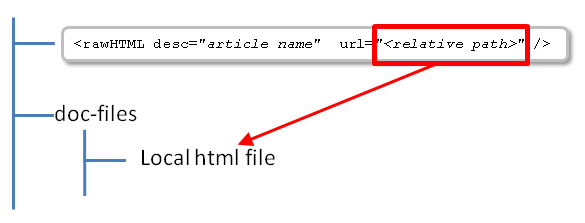
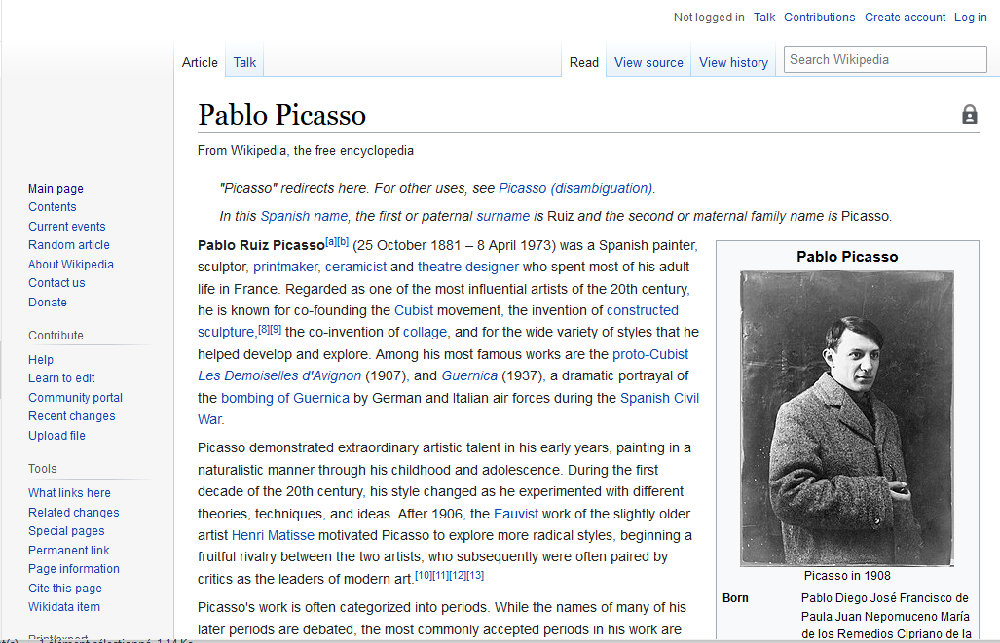
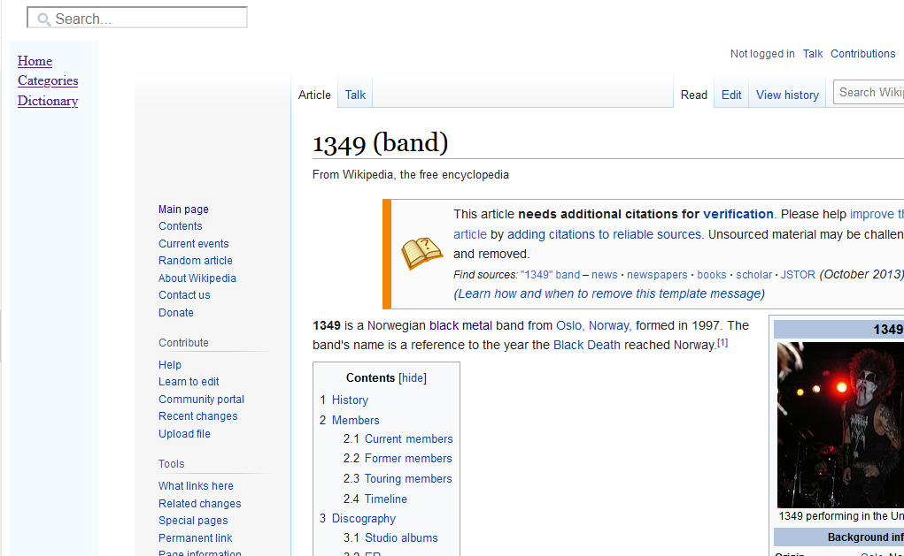

Home
Categories
Dictionary
Download
Project Details
Changes Log
What Links Here
How To
Syntax
FAQ
License
Raw html article
1 Article XML attributes
2 Html file url
2.1 Url relative paths
2.2 Http or https urls
3 Frame
4 Titles
5 Examples
6 Notes
7 See also
2 Html file url
2.1 Url relative paths
2.2 Http or https urls
3 Frame
4 Titles
5 Examples
6 Notes
7 See also
A raw html article is not using the docGenerator syntax, but is a hand-written html file. The attributes of the element defined in the wiki point to a hand-written html file, which can be on the disk or accessible on the Web.
A raw html article has the top-level element "rawHTML". It can contain:
For example:
By default the header and the customs menus are not visible, for example with the following article description:
Setting the value of this attribute to
A raw html article has the top-level element "rawHTML". It can contain:
- An optional list of alternate titles for the article
- A meta element at the top of the article, specifies the text which should be written as an explanation for an article in the dictionary or categories
Article XML attributes
A raw html article has the following attributes:- "desc": the article description
- "id": (optional) an alternate article ID
- "keepCase": (optional) true if the article description case should be kept as is (which means that the first character won't be forced as UpperCase in the HTML output)
- "url": the url of the html file on which this article point
- "frame": true if the html content is enclosed in a frame. See also frame
- "removeNav": true if the
navelements should be removed. By default they are preserved. - "removeH1Titles": true if titles of level h1 should be skipped in the result
- "titles": true if titles found in the hand-written html file must be added in the search box. See also titles
Html file url
The "url" attribute of the raw html article specifies where to find the hand-written html file to show. It can point to:- A relative path. In that case, the file will be in a "doc-files" sub-directory relative to the xml description
- An absolute path
- An http or https path
rawArticles directory in the wiki root[1]
See also output structure for more information
.Url relative paths
If the path of theurl attribute is relative, the file will be in a "doc-files" sub-directory relative to the xml description.
For example:
<rawHTML desc="Pablo Picasso" url="Pablo Picasso.html"/>
Http or https urls
If the path of theurl attribute points to a http or https resource, then the generator will get the resource from the network. Frame
The "frame" attribute allows to put the html content in a frame, preserving the header and the left menu.By default the header and the customs menus are not visible, for example with the following article description:
<rawHTML desc="article 2" url="L:/my/directory/Pablo Picasso.html"/>

Setting the value of this attribute to
true will preserve the header and the customs menus. For example:<rawHTML desc="article 2" url="L:/my/directory/1349 (band) - Wikipedia.htm" frame="true"/>

Titles
The "titles" attribute allows to add the titles found in the hand-written html file in the search box. For example:<rawHTML desc="article 2" url="L:/my/directory/1349 (band) - Wikipedia.htm" titles="true"/>
Examples
The following description point to a "L:/my/directory/Pablo Picasso.html" file:<rawHTML desc="article 2" url="L:/my/directory/Pablo Picasso.html"/>The following description point to a "Pablo Picasso.html" file under a "doc-files" sub-directory relative to this article declaration:
<rawHTML desc="Pablo Picasso" url="Pablo Picasso.html"/>The following description point to the same file, but will enclose the content in a frame:
<rawHTML desc="Pablo Picasso" url="Pablo Picasso.html" frame="true"/>
Notes
- ^ See also output structure for more information
See also
- Types of files: This article explains the types of files which can be found in the wiki input
- Hand written articles tutorial: This article is a tutorial explaining how to add hand-written html articles in the wiki
- Including html content: There are two ways to include hand-written html content in the wiki:
×

Categories: Structure | Syntax